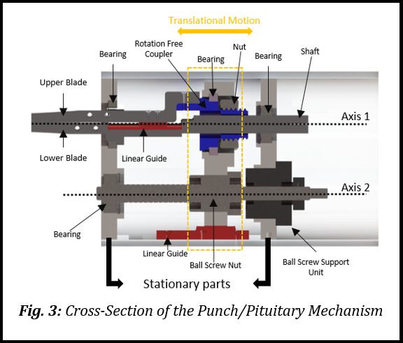

DEVELOPMENT OF SURGICAL INSTRUMENTS FOR ROBOT- ASSISTED
BIPORTAL ENDOSCOPIC SPINE SURGERY(BESS)
In this section, the mechanism and design requirements for BESS tools will be explained.
Before explaining the mechanism, it is necessary to understand what BESS is and what benefits it provides to both surgeons and patients.
1.) What is the BESS and its pros and cons?Biportal Endoscopic Spine Surgery (BESS) is one of the Minimally Invasive Surgery (MIS) techniques for decompression in spine surgery, where decompression procedure is performed through two small incisions, one for the endoscope and the other for surgical instruments as shown in Fig. 1 and it provides several advantages such as less blood loss, pain and tissue trauma, short recovery time and smaller scars in terms of patient. However, it increases the burden on surgeons` shoulders. Since BESS performed through two small incisions, surgeons` one hand is supposed to control the endoscopic camera, and they can only be use one hand to pursue the operation.When long operation time and learning period are taken into consideration, it can be exhausting for surgeons. As a MIS technique BESS relies on intraoperative navigation (fluoroscopy). Fluoroscopy is known as a source of ionizing radiation. The ionizing radiation causes many diseases from tissue damage to solid organ malignancy. Since intraoperative navigation is used during the BESS, the amount of radiation that surgeons are exposed to is high when it is compared with open surgery. During open surgery, the average radiation exposure to the surgeon is 0.16-0.22 mR for thyroid/eye, 0.21-0.23 mR for chest, and 0.20-0.14 mR for hands, while in a MIS, it is 1.72-1.52 mR for thyroid/eye, 3.08-2.93 for chest and 4.45-4.75 mR for hands [2].
2.) How to decrease the burden on surgeons` shoulders?Robot-assistance in MIS cannot only improve the dexterity and performance of surgeons and offer an ergonomic working condition to surgeons, but also can significantly decrease the radiation exposure to the surgeons and patients during surgery [3].
3.) Why do we need to design a new tool?, Doesn't already the spine surgical robot exist ?Currently, many robotic-assisted systems have been used for different spine surgeries [8–14]. Mazor: Spine Assist, Mazor: Renaissance, Mazor: Mazor X, Rosa Spine, Intuitive Surgical: Da Vinci Surgical System, and Globus Medical: Excelsius GPS are some of the commercially available surgical robotic systems used for spine surgery. However, the use of these robotic system has been mainly focused on stabilization procedure during which the robots guide the placement of pedicle screws and instrumentation. Researches on robot assisted MIS system for decompression procedure is still in its infancy.
4.) Here, what I have done!
As a part of development of tele-operated robot system for BESS, Three most used instruments in BESS, punch, pituitary, and shaver been redesigned and motorized to be used with a tele-operated surgical robot. Design requirement analysis, design and preliminary test result of the instrument is presented.
- DESIGN REQUIREMENTS OF PUNCH & PITUITARY
Punch and pituitary shares same driver mechanism, as both instruments need same 2DoFs - rotation of the instrument about its major axis, and the grasping. Fig. 4 shows the cross section of the driver mechanism.
The design requirements for Kerrison Punch and Pituitary Rongeurs are as followed: 
- During the spine surgery, Kerrison Punch and Pituitary Rongeurs are used to grasp and tear the bones and tissues. For punch and pituitary, 2DoFs - rotation of the instrument about its major axis, and the grasping is needed, as shown in Fig. 2a, b.
- To provide 2 DoFs, a two-axis shaft mechanism was used, and motors are planned to be fixed on the robotic arm as seen in Fig. 2d and Fig. 4. Since the distance between motors is constant and motors will be embedded on the robotic arm, the distance between the shafts has been kept constant for all three instruments to design a tool exchange adapter.
- The driving mechanism must provide sufficient force to cut the tissues and bones. Since the punch is used to cut stiffer tissue than the pituitary, experiment was performed to identify the force required by the punch to cut the spine bone.
- DESIGN REQUIREMENTS OF SHAVER
During the spine surgery, shavers are used to grind the bones. Shaver driving mechanism is designed such that the hand piece of the commercial shaver (Advantage Turbo from CONMED) can be mounted without modifications. Since the hand piece provides the rotation of the blades for grinding, only 1 DoF, rotation of the instrument about its major axis, needs to be provided by the shaver driver, as shown in Fig. 2c. Fig. 5 shows the shaver driver mechanism. The required roll motion is transmitted from driver gear to a driven gear specially designed to fit on the surface of the hand piece. The distance between the rotation axis of the hand piece and the driver gear is same as that of the punch/pituitary driver, so that both instruments can share same mechanical interface on the surgical robot arm. The gear ratio is 3:1. Full rotation of the driven gear is blocked with 2 stopper screw that placed on the designed gear (see Fig. 5).
- COMPUTER AIDED DESIGN PROCESS & MANUFACTURING
The instruments were designed using SOLIDWORKS 2019 Student Version. Almost all the plastic parts have been printed through the Hp Jet Fusion 4200 3D printer. Sand blasting has been applied as surface finishing process. Only the parts that bearings were placed have been machined from fiberglass reinforced nylon. The blades for punch and pituitary are taken from Kerrison Smith (PAH 03.23) and Pituitary Rongeurs (Kasco 3mm) and machined in accordance with the design.
You can see the CAD design and fast prototype of the final product in the following figure.